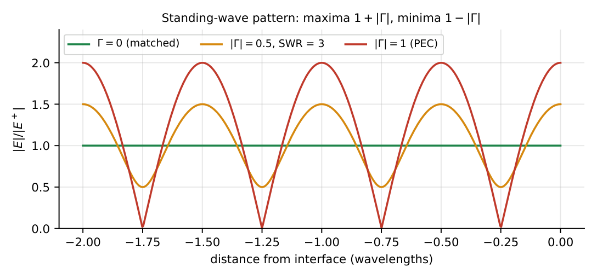

Reflection, Refraction and Power Flow
In this chapter
Normal-incidence \(\Gamma\), \(\tau\) and standing waves; Snell’s law, Brewster angle and total internal reflection; the Poynting vector and average power density.
6.1 Normal incidence
A wave in medium 1 (\(\eta_1\)) strikes a planar boundary with medium 2 (\(\eta_2\)) at \(z=0\).
\(\Gamma=\dfrac{E_r}{E_i}=\dfrac{\eta_2-\eta_1}{\eta_2+\eta_1}\), \(\ \tau=\dfrac{E_t}{E_i}=\dfrac{2\eta_2}{\eta_2+\eta_1}=1+\Gamma\).
Standing-wave ratio \(s=\dfrac{1+|\Gamma|}{1-|\Gamma|}\); \(|\Gamma|=\dfrac{s-1}{s+1}\).
Power: \(\dfrac{P_r}{P_i}=|\Gamma|^2\), \(\ \dfrac{P_t}{P_i}=1-|\Gamma|^2=\dfrac{4\eta_1\eta_2}{(\eta_1+\eta_2)^2}\).
Perfect conductor (\(\eta_2=0\)): \(\Gamma=-1\), \(\tau=0\), full standing wave with \(E=0\) at the wall. Perfect dielectric \(\to\) dielectric: \(\Gamma\) real.

The maxima are \(|E_i|(1+|\Gamma|)\) and the minima \(|E_i|(1-|\Gamma|)\), spaced \(\lambda/2\) apart and separated by \(\lambda/4\) from each other; for a PEC the first \(E\) minimum is at the wall.
Air to dielectric \(\eps_r=4\): \(\eta_2=188.5\,\Omega\), \(\Gamma=\frac{188.5-377}{188.5+377}=-\frac13\), \(\tau=\frac23\), \(s=\frac{1+1/3}{1-1/3}=2\). Reflected power \(=\frac19\), transmitted power \(=\frac89=88.9\%\). Check: \(\tau^2\frac{\eta_1}{\eta_2}=\frac49\cdot2=\frac89\).
6.2 Refraction and oblique incidence
Snell: \(\sqrt{\eps_1\mu_1}\sin\theta_i=\sqrt{\eps_2\mu_2}\sin\theta_t\) (for \(\mu_1=\mu_2\): \(n_1\sin\theta_i=n_2\sin\theta_t\), \(n=\sqrt{\eps_r}\)), \(\theta_r=\theta_i\).
Brewster angle (zero reflection for parallel/TM polarization, \(\mu_1=\mu_2\)): \(\tan\theta_B=\dfrac{n_2}{n_1}=\sqrt{\dfrac{\eps_2}{\eps_1}}\); \(\theta_B+\theta_t=90^\circ\).
Critical angle (only if \(n_1>n_2\)): \(\sin\theta_c=\dfrac{n_2}{n_1}\); for \(\theta_i>\theta_c\) total internal reflection (TIR), the transmitted wave is evanescent.
Perpendicular (TE) polarization has no Brewster angle for nonmagnetic media; the Fresnel coefficients are \(\Gamma_\perp=\frac{\eta_2\cos\theta_i-\eta_1\cos\theta_t}{\eta_2\cos\theta_i+\eta_1\cos\theta_t}\), \(\Gamma_\parallel=\frac{\eta_2\cos\theta_t-\eta_1\cos\theta_i}{\eta_2\cos\theta_t+\eta_1\cos\theta_i}\).
Air to glass (\(n=1.5\)): \(\theta_B=\tan^{-1}1.5=56.3^\circ\). Glass to air: \(\theta_c=\sin^{-1}(1/1.5)=41.8^\circ\). Air to glass at \(\theta_i=30^\circ\): \(\sin\theta_t=0.5/1.5\), \(\theta_t=19.5^\circ\).
6.3 Poynting vector and power flow
Instantaneous power density \(\vS=\vE\times\vH\) (W/m\({}^2\)), along the direction of propagation. Time average (phasors, peak amplitudes): \(\vS_{av}=\tfrac12\mathrm{Re}(\vE\times\vH^*)\).
Plane wave in a lossless medium: \(S_{av}=\dfrac{E_0^2}{2\eta}=\tfrac12\eta H_0^2\). Free space: \(S_{av}=\dfrac{E_0^2}{2\cdot377}\).
Poynting theorem: \(-\oiint\vS\cdot d\mathbf S=\dfrac{d}{dt}\iiint\left(\tfrac12\eps E^2+\tfrac12\mu H^2\right)dV+\iiint\sigma E^2dV\) (power flowing in = stored-energy rate + ohmic loss).
For a standing wave, \(S_{av}=0\) in a PEC situation (all power reflected); in a lossless medium energy is shared equally between \(\vE\) and \(\vH\): \(\tfrac12\eps E^2=\tfrac12\mu H^2\).
(i) \(\tau=1+\Gamma\) for the field, not for power. (ii) Brewster angle exists for parallel (TM) polarization only. (iii) TIR needs the denser medium first. (iv) \(S_{av}=E_0^2/2\eta\) uses the peak amplitude; with RMS drop the \(\frac12\). (v) The reflection coefficient depends on the ratio of impedances, which may be changed for \(\mu\) as well as \(\eps\).
Normal incidence: write \(\Gamma=\frac{\eta_2-\eta_1}{\eta_2+\eta_1}\) then \(s\) and power fractions. For \(\eps_r\) values \(4,9,16\) the impedances are \(\eta_0/2,\eta_0/3,\eta_0/4\). For the Brewster/critical angle questions just compute \(\tan^{-1}\) or \(\sin^{-1}\) of the index ratio.
6.4 GATE problems
Q1. Brewster angle for air to glass (\(n=1.5\)) is (A) \(33.7^\circ\) (B) \(41.8^\circ\) (C) \(56.3^\circ\) (D) \(90^\circ\).
Q2. The reflection coefficient at a perfect conductor is (A) 0 (B) \(+1\) (C) \(-1\) (D) \(j\).
Q3. The critical angle at a glass (\(n=1.5\)) to air boundary is (A) \(41.8^\circ\) (B) \(56.3^\circ\) (C) \(33.7^\circ\) (D) \(90^\circ\).
Q4. The unit of the Poynting vector is (A) W (B) W/m\({}^2\) (C) J/m\({}^3\) (D) V/m.
Answers: Q1 (C). Q2 (C). Q3 (A). Q4 (B).
Q5. A wave in air strikes a dielectric with \(\eps_r=4\) at normal incidence. \(\Gamma=\) (A) \(+1/3\) (B) \(-1/3\) (C) \(+1/2\) (D) \(-1/2\).
Q6. For the same boundary the fraction of power transmitted is (A) \(1/9\) (B) \(2/3\) (C) \(8/9\) (D) \(4/9\).
Q7. For \(|\Gamma|=1/3\) the standing-wave ratio is (A) 1.5 (B) 2 (C) 3 (D) 4.
Answers: Q5 (B). Q6 (C). Q7 (B).
Q8. SWR for \(|\Gamma|=0.6\): .
Q9. Refraction angle (degrees, one decimal) for \(\theta_i=30^\circ\), air to \(n=1.5\): .
Q10. Average power density (W/m\({}^2\), one decimal) of a free-space wave with \(E_0=377\) V/m: .
Answers: Q8: \(1.6/0.4=4\). Q9: \(\sin^{-1}(1/3)=19.5\). Q10: \(377^2/(2\cdot377)=188.5\).
Q11. Total internal reflection requires (A) \(n_1>n_2\) (B) \(\theta_i>\theta_c\) (C) works for both polarizations (D) \(n_1<n_2\).
Answers: Q11: (A), (B), (C).
T1. \(\tau\) in terms of \(\Gamma\)? T2. Brewster condition? T3. \(\vS_{av}\) expression?
Answers: T1: \(1+\Gamma\). T2: \(\tan\theta_B=n_2/n_1\) (TM). T3: \(\frac12\mathrm{Re}(\vE\times\vH^*)\).
- \(\Gamma=\frac{\eta_2-\eta_1}{\eta_2+\eta_1}\), \(\tau=1+\Gamma\), \(s=\frac{1+|\Gamma|}{1-|\Gamma|}\), transmitted power \(1-|\Gamma|^2\).
- Snell \(n_1\sin\theta_i=n_2\sin\theta_t\); \(\tan\theta_B=n_2/n_1\) (TM); \(\sin\theta_c=n_2/n_1\).
- PEC: \(\Gamma=-1\), \(E_t=0\) at the wall.
- \(\vS=\vE\times\vH\), \(S_{av}=E_0^2/2\eta\); Poynting theorem balances stored energy and loss.